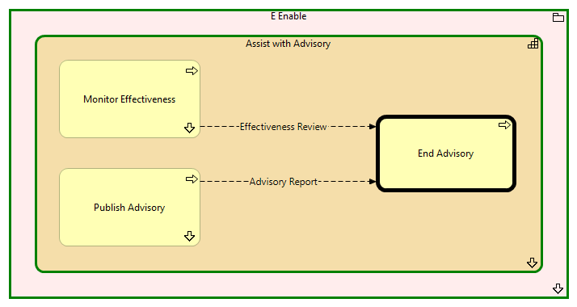

End Advisory - Context
(
)

generated_by
build_archi_xml.py::gen_proc_node_context_view
generator_path
pedro/capabilities/build_archi_xml_assign/build_archi_xml_assign.py
run_at
2026-10-10T17:57:33
view_type
process_context
E Enable
Assist with Advisory
Publish Advisory
Publish Advisory - Context
Monitor Effectiveness
Monitor Effectiveness - Context
End Advisory
Assist with Advisory - Processes
E Enable - Processes
Advisory Report
Publish Advisory
End Advisory
Effectiveness Review
Monitor Effectiveness
End Advisory